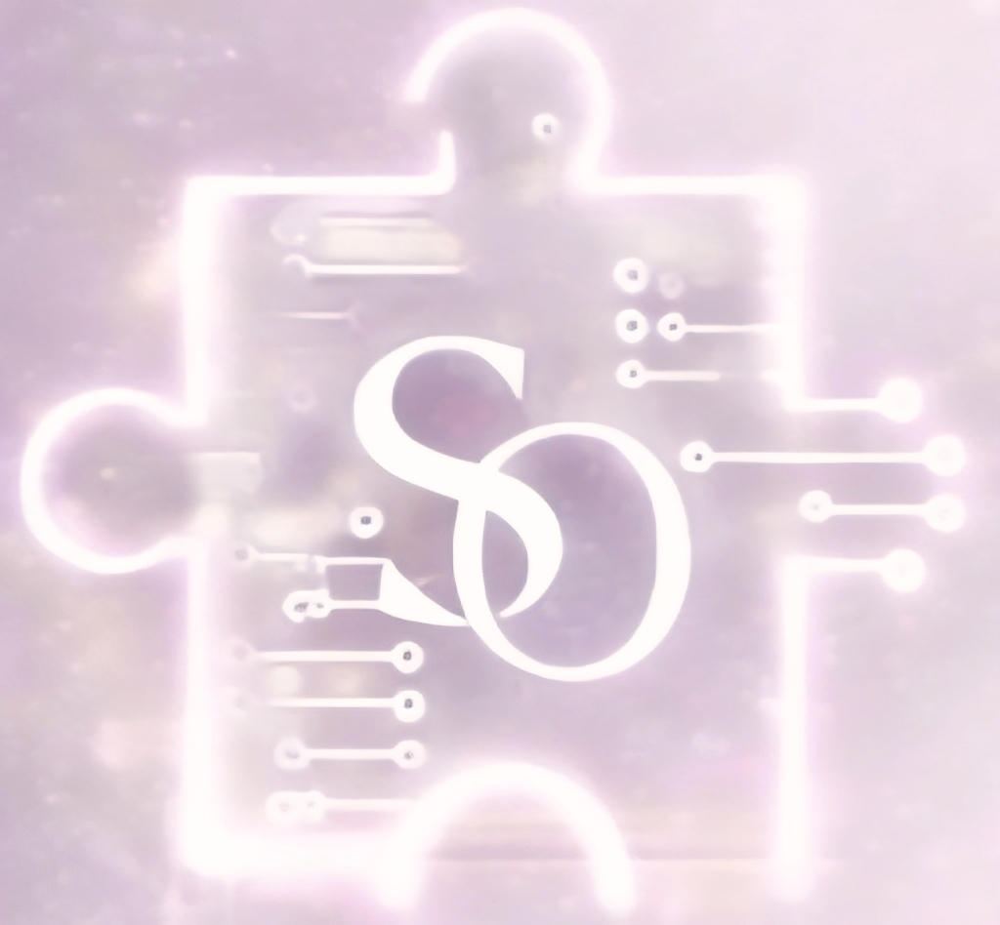
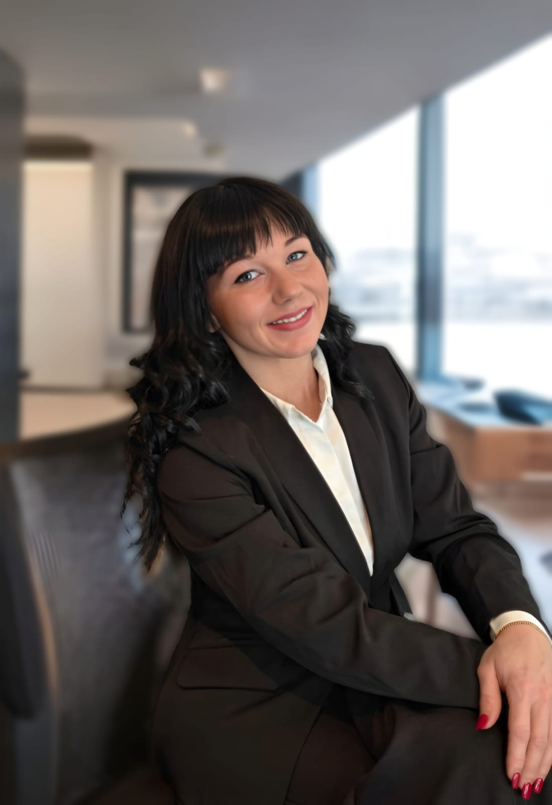
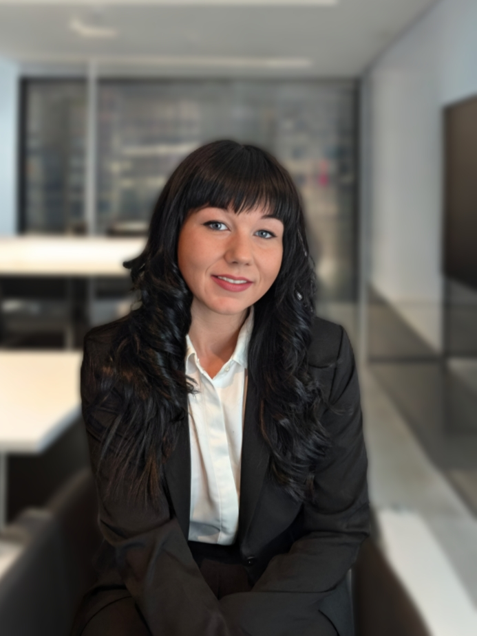
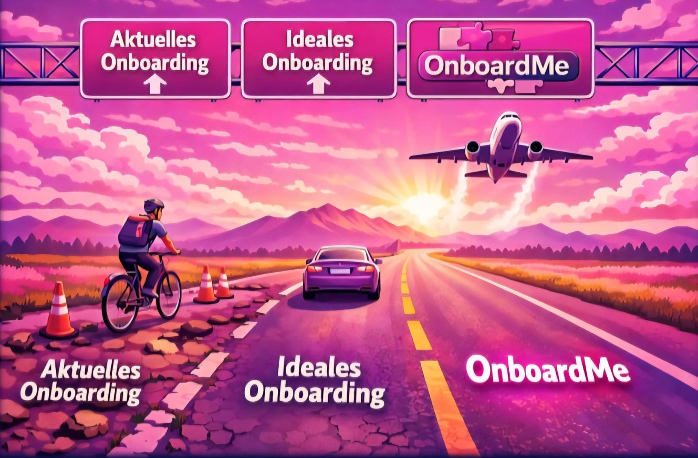

Schön, dass Sie mein Portfolio besuchen!
Kauffrau für Digitalisierungsmanagement
Meine Mission: Menschen helfen – früher in der Medizin, heute mit digitaler Transformation. Mein Ziel: Die Ressource unseres Lebens effektiv nutzen und vereinfachen.

Mein Name ist Sarah Omonsky, ich bin 32 und Mutter einer 5-jährigen Tochter.

Was mich schon mein ganzes Leben begleitet, ist ein starkes Bedürfnis nach Entwicklung. Stillstand macht mich nicht glücklich. Gerade als Mutter weiß ich, wie wichtig es ist, Verantwortung zu übernehmen. Durch Mut, Willen und Durchhaltevermögen entsteht Selbstverwirklichung. Wachstum bedeutet für mich, Neues zu lernen und mich weiterzuentwickeln – auch dann, wenn es unbequem ist. Genau so bin ich meinen beruflichen Weg gegangen: konsequent, wissbegierig und mit dem Anspruch, wirklich voranzukommen.
Was mich antreibt: Dinge nicht nur zu verstehen, sondern sie aktiv zu verändern. Kreative und innovative Ansätze sowie die Fähigkeit, schnell lösungsorientiert zu handeln, gehören zu meinen Stärken. Zufrieden bin ich dann, wenn ich sehe, dass meine Arbeit Wirkung hat – ein Prozess, der funktioniert, ein Projekt, das erfolgreich umgesetzt wird, eine Struktur, die Menschen im Alltag entlastet.
Was mir wichtig ist: funktionierende Zusammenarbeit, denn Erfolge feiert man am besten im Team. Ich übernehme gern Verantwortung, gehe voran und halte auch dann durch, wenn es schwierig wird. Dabei kann ich führen, unterstützen und mich einordnen – je nachdem, was die Situation erfordert.
Mein berufliches Ziel: Als Mutter ist es mir wichtig, Stärke, Selbstvertrauen und Zielstrebigkeit vorzuleben. Genau deshalb habe ich beruflich immer wieder Entscheidungen getroffen, die nicht der einfache Weg waren. Mein Ziel ist es, dort anzukommen, wo meine Arbeit zählt und ich mit meinem Beitrag ein wirksames Puzzleteil in der digitalen Transformation sein kann.
Was mir bei meinem zukünftigen Arbeitgeber wichtig ist: Familienfreundlichkeit, Flexibilität, Fordern und Fördern, Wertschätzung, Innovation und Zukunftsfähigkeit.
Von der Arztpraxis zur IT – mein Weg in die digitale Transformation
Ausbildung mit Fokus auf digitale Geschäftsprozesse, Projektmanagement und IT-Systeme. Abschlussprojekt: OnboardME – Digitales Onboarding-System.
Vielfältige Erfahrungen in verschiedenen Fachbereichen mit Schwerpunkt auf Praxismanagement, Prozessoptimierung und Qualitätssicherung in regulierten Umgebungen.
Weiterbildung in Praxismanagement, Personalführung, Qualitätsmanagement und betriebswirtschaftlichen Grundlagen.
Fundierte Ausbildung in medizinischer Assistenz, Patientenbetreuung und Praxisorganisation.
Solide schulische Grundlage mit erfolgreichem Abschluss.

Sie müssen sich OnboardMe nicht vorstellen – Sie können es selbst erleben. Im Video sehen Sie den Prototyp in Aktion.
Fachliche Expertise kombiniert mit praktischer Erfahrung